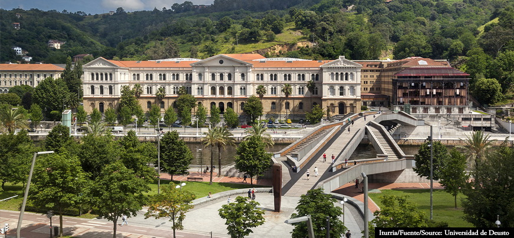

Primeros años
Comencé mi educación en el Colegio Vizcaya, donde adquirí una base académica sólida y, sobre todo, valores fundamentales como el respeto, la responsabilidad y la perseverancia. Durante estos años también reforcé mis habilidades sociales, aprendí a trabajar en equipo y a afrontar los retos con disciplina y constancia. Fue en esta etapa cuando descubrí la importancia de la curiosidad intelectual y el aprendizaje continuo, cualidades que hoy sigo cultivando en mi desarrollo personal y profesional.
Universidad
Actualmente curso Ciencia de Datos e Ingeniería Informática en la Universidad de Deusto, una formación que me permite integrar conocimientos de programación, matemáticas, estadística y gestión de datos con la construcción de soluciones tecnológicas de impacto. Gracias a esta doble especialización he podido trabajar tanto con la parte teórica, modelos matemáticos, algoritmos y estructuras de datos, como con la parte práctica, desarrollo de aplicaciones, optimización de procesos y análisis de grandes volúmenes de información.
Durante la carrera he aprendido a utilizar lenguajes de programación como Python, R, SQL y Java, además de librerías y frameworks especializados en machine learning, deep learning y análisis de datos (Scikit-learn, TensorFlow, PyTorch, Pandas, entre otros). También he trabajado con bases de datos relacionales y no relacionales, y con herramientas de visualización como Power BI o Matplotlib, lo que me permite comunicar resultados de forma clara y efectiva.
Más allá de lo técnico, mediante las distintas asignaturas la universidad me ha brindado la oportunidad de participar en proyectos colaborativos que fomentan el trabajo en equipo, la comunicación y la gestión de proyectos. En ellos he aprendido a enfrentar desafíos reales, desde la recopilación y limpieza de datos hasta la implementación de modelos predictivos y la presentación de resultados a un público no especializado.
Mi objetivo a futuro es seguir especializándome en la aplicación de la Ciencia de Datos a problemas del mundo real, explorando campos como la predicción financiera, la detección de anomalías o el desarrollo de sistemas inteligentes que apoyen la toma de decisiones estratégicas. Considero que esta etapa universitaria no solo me está aportando conocimientos técnicos, sino también una mentalidad analítica, crítica y creativa que me ayudará a crecer como profesional en el ámbito tecnológico.